自己紹介
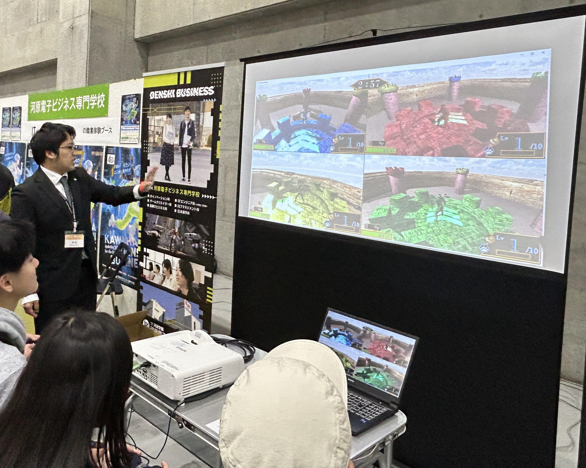
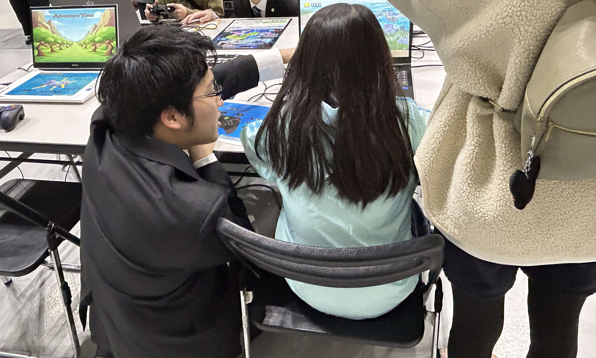
プロフィール
現在、専門学校でプログラミングを学んでいる学生です。
C# / C++ を中心に約1〜3年間コツコツと学習を積み重ねており、プログラマーとして働くことを目指しています。
スキル
授業や個人制作を通じてC# / C++の基礎〜応用を学んでいます。
将来的にはより広い技術領域へ挑戦していきたいと考えています。
目指していること
ユーザー体験を大切にしながら、設計や技術にも意識した開発ができるプログラマーになることが目標です。
在学中にさらに技術を磨き、卒業後はプログラマーとしてのキャリアをスタートさせたいと思っています。
Wonder-Garden

作品概要
目次

ギミックについて
今回2点ほどステージギミックを用意しました。
土管について

土管の中に判定を付けることでプレイヤーが土管の中にくぐった際に
もう一つのつなげた土管の方に移動することができます。

土管をくぐった時にプレイヤーの位置を変更・更新しますが、
この時カメラをプレイヤーの位置に合わせて更新しないといけません。
カメラがプレイヤーの位置を見失い、移動後のカメラが反映されないままになります。
大砲について

プレイヤーが大砲に近づいて中に入り、設定している向きと初速の勢いを持って発射し、
重力で少しずつ勢いを落としていくことで放物線を描くような飛び方ができました。
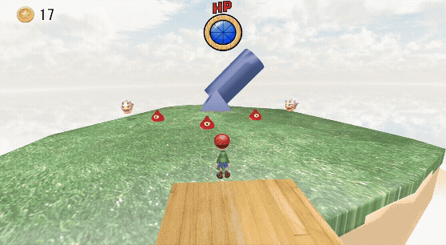
大砲の周りに当たり判定を付けており、判定に触れると大砲の中に入るようになっています。
大砲の中に入っている間はプレイヤーに「大砲に入っている状態」を設け
移動や攻撃の入力を弾くようにしています。
技術紹介
今回紹介する技術は 5 点ほどあります。
ステートパターンについて
今まででは、Update 関数の中で状態遷移を行っていたのですが
新しい状態を追加していく度に条件分岐が増えてしまい、エラーの原因につながっていました。

ステートパターンを実装したことでステートパターン用のクラスを用意でき、
状態遷移時の処理が書きやすくなりました。
新しい条件を追加したい時は新しいクラス名を追加するだけで良いので、
コードの保守性や状態遷移時のバグを抑制できました。

マネージャークラスについて
攻撃判定を管理するマネージャークラスを作りました。
プレイヤーと敵は共通の当たる判定を持っていた為、敵同士の攻撃でやられていました。
マネージャークラスを実装したことで攻撃判定時に "誰が" 攻撃したかを把握し、
敵同士の当たり判定でやられることをなくすことができました。
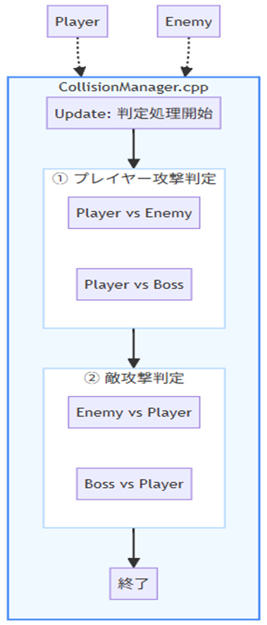
ボスの HP UI について
HP バーは 2 種類作りました。
現在 HP を示す緑のバーと、減った分を追従して減らす赤のバーがあります。
HP が減少時、緑のバーは即時に消えますが赤のバーが追従することで
ダメージの余韻と手応えを感じるようにしてクオリティアップにもなりました。
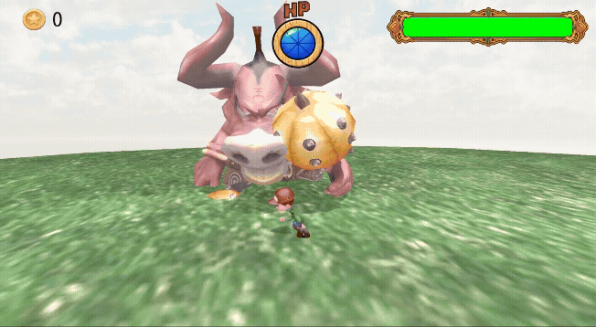
ボス戦の演出について
ボス戦に入った時に演出がないとボス戦なのか伝わりづらいと思い実装しました。
黒帯とボスのテクスチャを用意することで迫力と没入感を高めました。
線形補間を用いて一定の数値で黒帯やテクスチャを点滅することで
ボス戦前のムービー感を出すことができました。
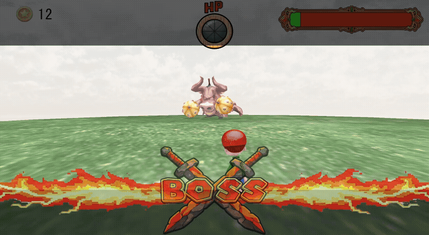
トゥーンシェーダーについて
影がパキっとしていて、光の当たり方次第で色がはっきり変わりアニメ調に見せたい為、
トゥーンシェーダーを実装しました。
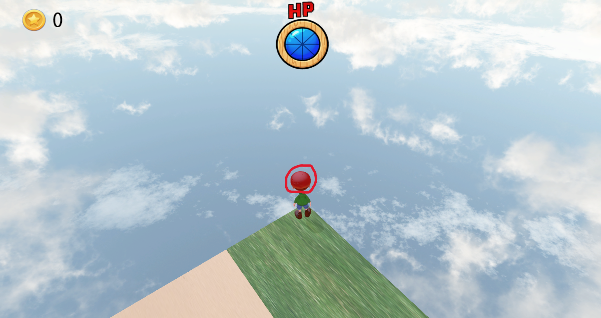

赤く丸で囲っているプレイヤーの帽子の影がくっきり入っているのが違いとなっています。
LastSurvivor
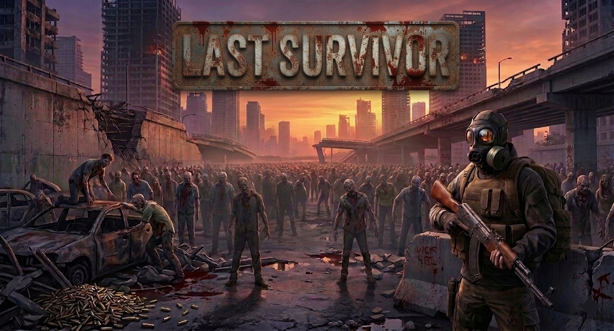
作品概要
目次
操作説明
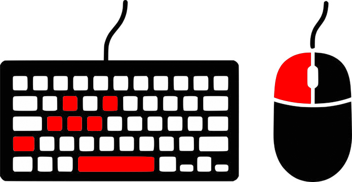
移動：WASD キー
ダッシュ：左 Shift キー + WASD
射撃：マウス左クリック（長押しで連射可能）
カメラ移動：マウス
リロード：R キー
技術紹介
命名規則の徹底
プロジェクト全体を通して、以下の命名規則を統一しました。
private → _hogeHoge
public → HogeHoge
class → HogeHoge
Task メソッド → HogeHogeTask
File / Object → HogeHoge
命名規則を徹底することで、変数を見ただけでスコープや用途が把握できるようになりました。
特に、非同期メソッドに Task を付ける規則は「このメソッドは await が必要」と分かるため、
呼び出し側のミスを減らすことが出来ました。
Header アトリビュートによる Inspector 設計
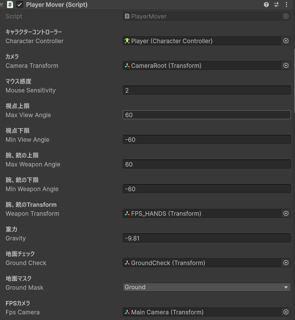
Header アトリビュートを全コンポーネントに統一して使用しました。
これにより Unity の Inspector 上でどのフィールドが何の設定なのかが一目で分かるようになりました。
コードを読まなくても Inspector だけで設定内容を把握できるため、
自分以外の人がプレハブを触る際の手間を減らしました。
また Range(0，1) と組み合わせることで、不正な値の入力をエディタレベルで制限できました。
エネミー AI のステートマシン
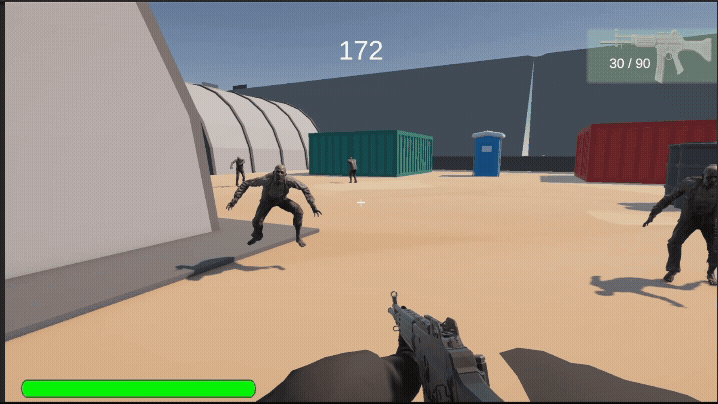
敵の AI は今どんな状態かを管理するステートマシンで設計しました。
ステートマシンを使わない場合、Update() の中に各ステートの条件を書いてしまうことになります。
条件が複雑なスパゲッティコードになり、コードの見通しが悪くなります。
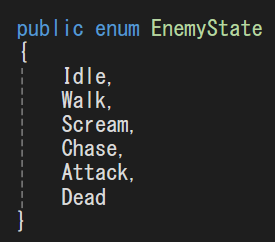
そこで enum で状態を定義し、状態ごとに処理を分離しました。
また、状態の変化は必ず Trantionto() を経由させることで
Enter() と Exit() の処理を一か所にまとめることが出来ました。
さらに現在の状態を ReactiveProperty で公開することで、
EnemyAnimator 側が状態変化を購読してアニメーションを切り替える設計にしています。
アニメーション処理を EnemyAnimator に集中することが出来ました。
R3 とステートマシンの連携
R3 を導入する前、アニメーションの更新は Update() の中で毎フレーム状態を確認する形になりがちでした。
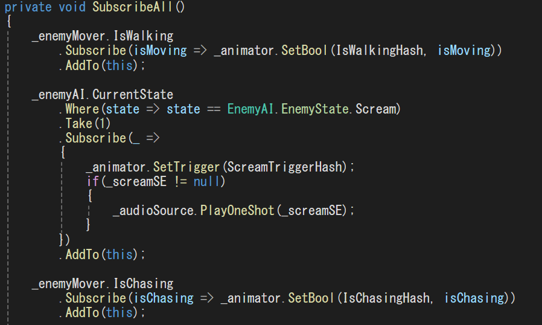
R3 を導入することで値を変更した時だけ処理を行うことが出来るようになりました。
① 変化がないフレームでは処理を行わないため、無駄な処理を省くことが出来ました。
② 値が変更した時に更新処理が入るという意図がコードを読むだけで伝わります。
また AddTo(this) を付けることで、オブジェクトが破壊されたタイミングで購読が自動解除され、
メモリリークのリスクを防ぐことが出来ました。
テンプレートメソッドパターン
回復アイテムと弾薬アイテムは「浮遊する・回転する・触れたら消える」という共通の挙動を持ちながら、
取得時の効果だけ異なります。
これを別々のクラスに全部書いてしまうと同じコードが重複してしまう為、
抽象クラス BaseItem に共通処理をまとめました。
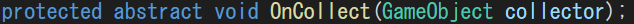
abstract で宣言した OnCollect() は、子クラスが必ず実装しなければならないと強制することで
処理の書き忘れを防ぐことが出来ました。
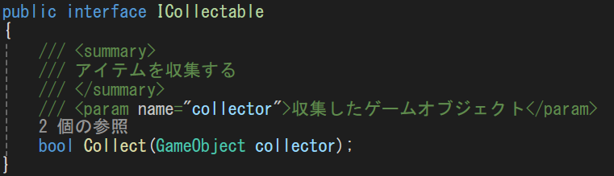
インターフェースを導入することで「取得できるもの」という概念をコードで表すことが出来ました。
インターフェースを実装したクラスには必ず OnCollect() メソッドを持たせることができました。
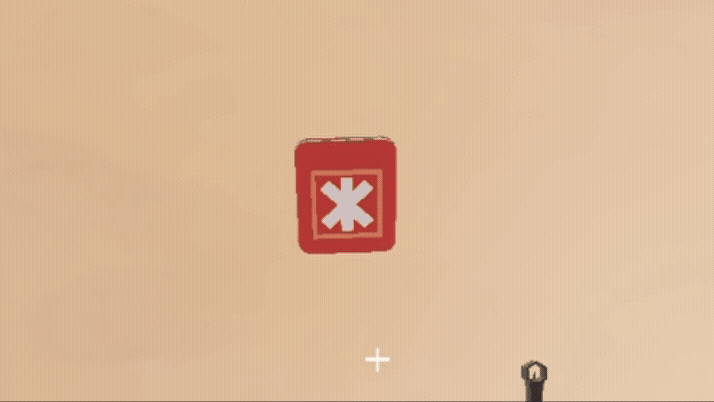
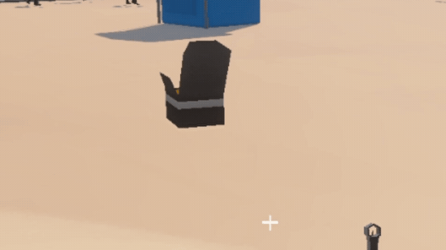